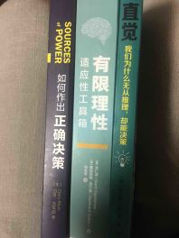
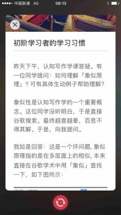
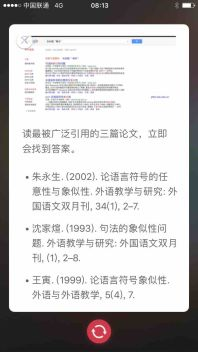
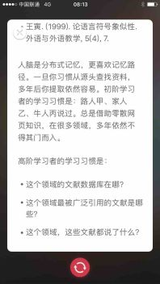

消息
产品部落
开智世界
产品部落
昨天
vivian23:23
又学到一个新术语,谢谢！刚去wiki上看了下，如果我理解对的话，有限理性是降低对决策结果要达到的标准，即满意而非最优，它基于的理由是：环境复杂，人类认知有限以及人类认知是不断变化的，所以它是积极的，在时间紧迫的情况下，决策制定后，应该不会拒绝新的建议（因为认知会变化），从而避免了认知闭合。不知道我理解的对不对？貌似这个在经济学上用的多，我不太懂。感觉通俗的讲的话，有限理性相当于说：“我没有作到最好，但是我尽最大努力了（在我认知范围内）”；认知闭合则是：”我没有作到最好，因为我没有尽最大努力，而是急于完成或邀功或自high。我也不想再完善了，太累了啊“
福冈-macOS-柳白猿-xbaiyuan23:35
哈哈哈！wiki太赞了！这么一说才发现...有限理性的两本书我还没读...anyway，西蒙也非常推崇有限理性。等下个月读完这三本有限理性和决策相关的书，再来和你讨论哈哈。
福冈-macOS-柳白猿-xbaiyuan23:36

福冈-macOS-柳白猿-xbaiyuan23:39
我也先复习完部落的经典，再读其他的哈哈。一本好书真的可以读很久，其他的书穿插着看一下就好
vivian23:41
是啊，我也得专心读书，我还需要多读阳老的文章，太受益了，太多超出我认知的了
vivian23:42
等你读完分享讨论
福冈-macOS-柳白猿-xbaiyuan23:47
好嘞！晚上早点休息哈
vivian23:48
晚安，谢谢今晚的分享，棒！
今天
北京-周巧鸽-juliettezhou08:16
Vivian ，你对认知闭合，有限理性术语的及时，深入挖掘，都是很好的习惯，真正做到了每天至少三张卡片。关于搜索方式，我借阳老前几天的一个案例抛砖引玉，供你参考判断哈。
北京-周巧鸽-juliettezhou08:16

北京-周巧鸽-juliettezhou08:16

北京-周巧鸽-juliettezhou08:16

北京-周巧鸽-juliettezhou08:23
其实我的习惯也是查维基百科，看到阳老的点拨，现场答疑印象深刻。个人建议，术语查过维基百科初步有印象后，先不要闭合，而是进一步查阅更一手的资料。一张术语卡，至少要追踪到概念提出人，提出年代，当时概念的限定条件，最好也能写出当时作者对这个概念的反常识鲜活证据。如果概念提出年代久远，还要看现在学术界主流对这个概念的评价。有了这些，对自己是一个很好的训练，也会深深的刻入记忆。加油
北京-周巧鸽-juliettezhou08:25
有限理性概念，是通识部落第一个月的重要概念，可以去GitHub 翻阅同学们的卡片。
北京-周巧鸽-juliettezhou08:26
通过不断的努力，让我们一起成长为高阶学习者
vivian10:32
巧歌, 谢谢! 你的建议很受益, 我确实闭合了那两个概念:-) 我去学术搜索和github上都去学习下。上面你的建议输出张卡片呢，更多同学可以看到，我觉得建议很好。